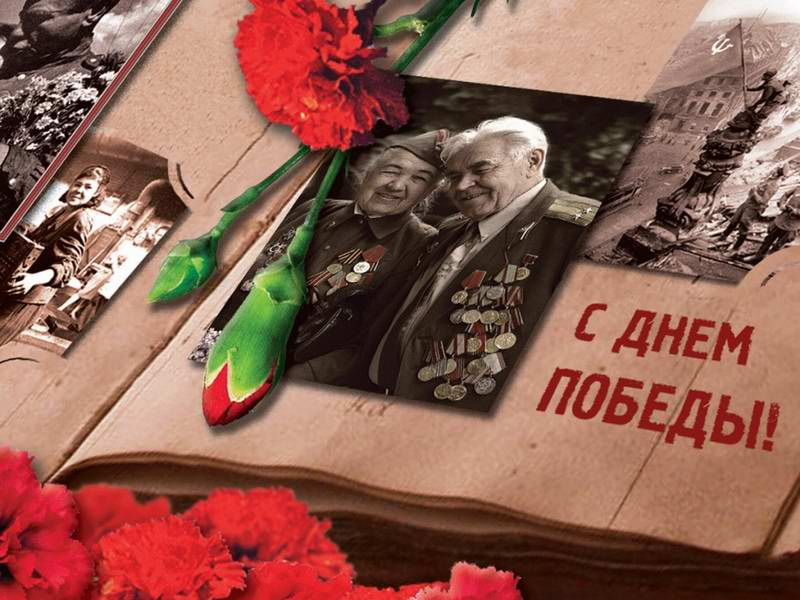

День Победы
Подготовка к празднику

Проходят годы, уходят из жизни ветераны, но нельзя стереть войну из памяти людей. Несмотря на горечь утраты, День Победы - всенародный праздник, который стал для всех нас символом гордости, славы, доблести и подвига народа, отстоявшего свободу. В этом году жителей города ждёт насыщенная программа с мастер-классами, театрализованными представлениями, концертными программами. Стало доброй традицией с раннего утра 9 мая в храмах угличского благочиния проводить поминовение усопших воинов и благословенный молебен за дарование Победы в Великой Отечественной войне 1941-1945 годов. Патриотическую акцию «Стена Памяти» знают не только угличане. Много гостей города приезжают на праздник в Углич для того, чтобы сделать памятную запись о родственниках, участвовавших в Великой Отечественной войне. На этой же площадке угличане смогут посмотреть фотовыставку Виктора Колыхалова. Он оставил угличанам бесценный подарок - нашу общую историю в фотографиях. Через много лет на лица ветеранов Великой Отечественной войны, идущих парадным маршем в День Победы, смотрят и будут смотреть внуки, правнуки, следующие поколения и узнавать своих родных и близких – ведь «нет в России семьи такой, где б ни памятен был свой герой». Детская художественная школа приглашает всех желающих принять участие в Арт-проекте «Великая Победа». С помощью кистей и красок на больших листах фанеры под руководством преподавателей ДХШ будет оживать память о величайшем событии в истории страны. На центральной сцене в вокально-хореографической композиции «От героев былых времён…» выступят лучшие коллективы района. Продолжит программу праздничных мероприятий концерт Оркестра русских народных инструментов учащихся и педагогов Детской музыкальной школы города Углича под руководством Александра Арсеньева. Тут же по соседству в зелёном сквере развернётся военно-полевой городок «На солнечной поляночке» с полевой кухней. Под любимые всеми мелодии ветеранов войны, тружеников тыла, да и просто всех желающих угостят знаменитой солдатской кашей.